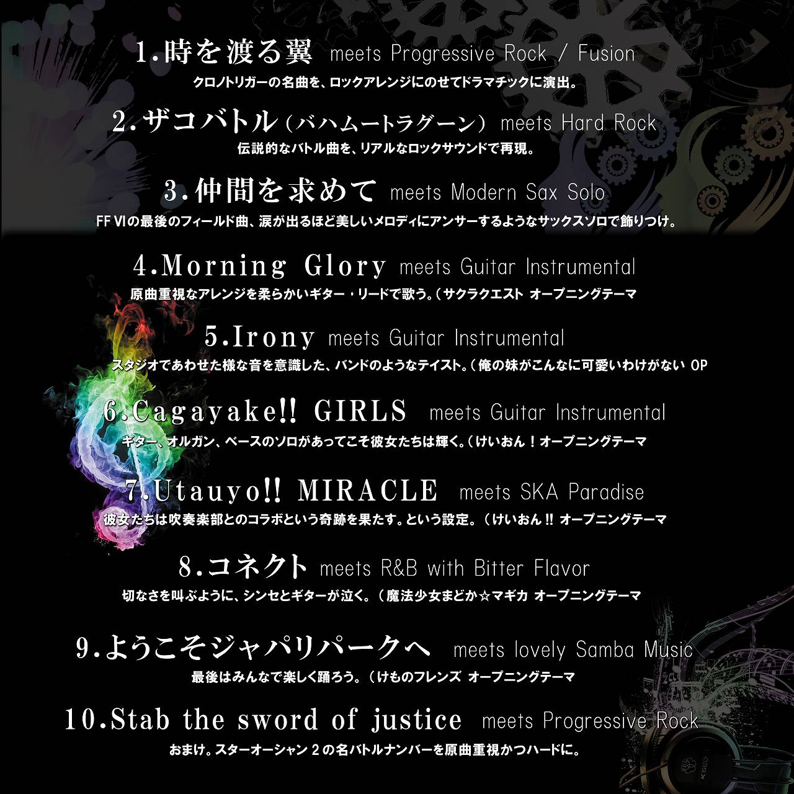

初出展のM3秋で出す予定のCDのツイッター用デモを作ってみました。 M3秋で出すCD「KLA-ONE -音楽素材の蔵-」のツイッター用デモ第2弾を公開しました。ゲームやら動画に使えそうな音楽素材としてCDを作ります！ どうもmartinです。M3初出展記念ということで、即売会での販売に限定して
2018年10月リリース
「KLA-ONE」
音楽素材の蔵 Vol.1
個性的で良質なバトル曲、フィールド曲素材を目指して。


Illustration by 鹿目悠人
(地元のファンタジー好きな友人です。)
2018年、M3秋に初出展をきっかけに約10年振りにCDを制作しました。
アマチュアゲームクリエイター、動画制作などの創作を盛り上げる
バラエティ豊かな12曲を収録しました。
特にRPGが好きなので、RPG音楽の花形
であるバトルテーマ6曲とイベントや
フィールド音楽的なものを6曲。
合計12曲を収録しました。
芸歴（？）20年、ファミコン～SFC～プレステとゲームにはまり、ゲーム音楽を良く
知る人間が創作する、気合の入ったゲーム用BGMと想像して頂ければ幸いです！
音楽素材の蔵１→"KLA-ONE" → "クラワン"と呼んでいただければ。
影響を受けたゲームサントラはテイルズシリーズ、ヴァルキリープロファイル、
スターオーシャン2、ファイナルファンタジー、クロノトリガー、クロノクロスなど。
必ずしもそれっぽくはなっていませんが（笑）影響は受けました。
*Battle side
1.Crush Out The Fear
・ザコ戦ぽくも迫力あるバトル曲
2.Far Beyond The Darkness
・スピード感ある激しいバトル曲
3.The Tactical Sense
・とてもザコ戦ぽいバトル曲
4.Killing Knot
・圧力感あるバトル曲
5.Holy Hearts
・テンションの上げ下げが少ないバトル曲
6.Black Rainbow
・ボス感のある重たいバトル曲
*Drama, Field side
7.回想列車
・切なくエスニックな回想っぽい曲
8.桜花より、愛をこめて
・切な優しいバラード曲
9.Silent Seaside
・海や静かな風景にぴったりの曲
10.Blue Point Of My Tomorrow
・青い空にぴったりなフィールド曲
11.One Night Of The Stranger
・近未来、現代的な情景に合うBGM
12.The Lost Wing
・スケール大きいい感じのファンタジー曲
以上の12曲をBGM素材として収録致します。
*作品の著作権は当方(Klang-Gear/martin)にあります。
購入いただいた方はBGM素材としての利用OKで、申し入れも不要です。
できれば使って頂いた作品に名前をクレジット(Klang-Gear又はmartin)頂けると
大変喜びますし、作品のフォローアップをできる限りさせて頂きます。
他社による再販や有償配信、ダウンロード販売は認めておりません。
イベント(M3秋-2018)では100枚を目標に関西から上京します。
完売できるよう、応援を頂けると大変うれしく思います。
コストの兼ね合いで毎年関東に行くのは難しいので。（笑）
おおよその在庫が販売できた暁には、定番販売としてオンラインストアもしくは
ダウンロード販売にての継続を検討しております。
頒布価格予定：1,000円
*CD-R(CMC-pro/台湾製
*オフセット印刷紙スリーブ
クレーム（音飛び、聴けないなど）がございましたら
交換やデータ配布などで対応させて頂きます。
印刷機材の不調とメディアの表面不良で
一部特典CDの「Klarage」に黒インクの。
斑点のようなものが確認されています。
おりますので、予めご了承お願いします。
・2018/9/4 : URLを公開しました。
・2018/9/16 : Twitterに第一弾宣伝動画を公開(前半6曲)。
これまた飛行機で時間があったので幸い間に合いました（笑）
”KLA-ONE 音楽素材の蔵”
ゲームやら動画に使えそうな音楽素材としてCDを作ります！
こちらはバトルサイドと称した前半のバトル向けBGM
6曲のクロスフェードです。#M3秋 pic.twitter.com/AAeYghFr2y
・2018/9/23 : Twitterに第二弾宣伝動画を公開。(後半6曲)
第2弾はField/Drama Sideと称した後半トラックのクロスフェードです。#M3秋 https://t.co/j6IifaVryl pic.twitter.com/4Ms9I8UWOg
・2018/9/25 : ジャケットを公開しました。
・2018/10/6 : 即売会限定の購入特典を
発表しました！色々な10曲入りの
アレンジCD「KLARAGE(クラレージュ」
先着順にお配りします！
スケジュールの関係で”出来上がった数だけ”となりますが
一応100枚分くらいを目指して
作業に当たっております。
当サークルの新作CD、KLA-ONEを買っていただけた方に
オムニバスアレンジのCD「Klarage-クラレージュ」を配布する事にしました！
できるだけ多くお渡しできるように数を焼いております。
謎の選曲です（笑） #M3秋 pic.twitter.com/r1PPez2Q2i

実はこちらのほうが音的にも新しい作品が多かったりします。
即売会後の販売予定はありませんので、ぜひ検討頂けると幸いです！